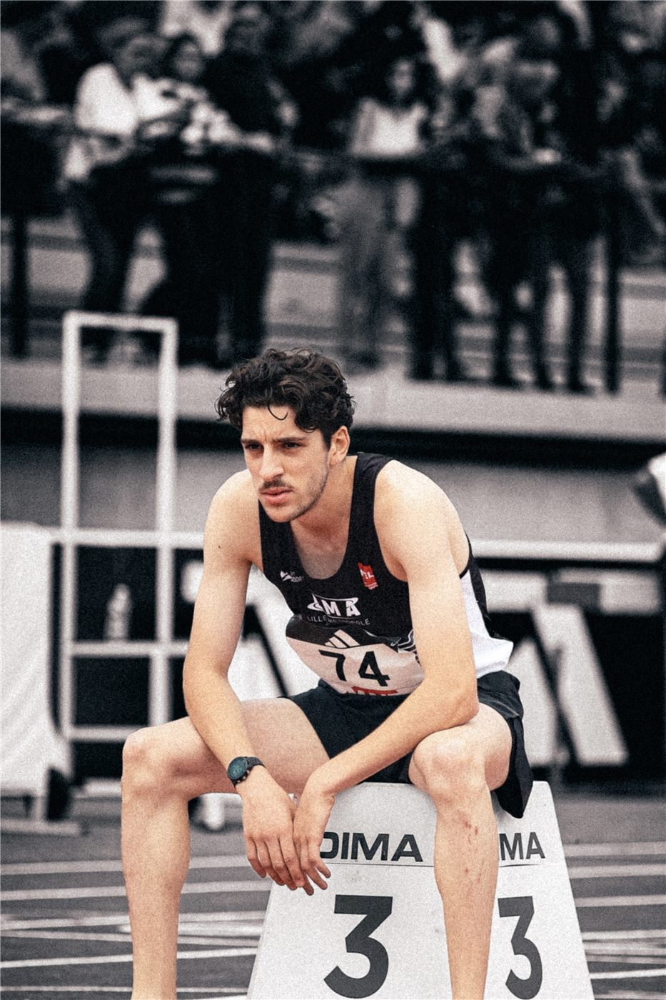

Coureur de haut niveau 800m
Mon parcours
Depuis 2025 - Direction LA
De retour sur la piste. Plus lucide. Plus solide mentalement. En route vers les minima pour les Jeux Olympiques de Los Angeles 2028. Chaque seance a une raison d’etre.
2024 - Le reve americain
Parti aux Etats-Unis m’entrainer dans des programmes d’elite. J’attendais une progression, j’ai pris une lecon. Les methodes d’entrainement ne collaient ni a mon corps ni a ma foulee. Nouvel environnement, nouveaux coachs, nouvelle pression : je n’ai jamais reussi a m’adapter.
La realite : je suis rentre en France. Humblement. Mais cette annee m’a appris plus que n’importe quelle medaille.
Ce que 2024 m’a appris
- S’adapter est plus dur que travailler dur. On peut s’entrainer a fond n’importe ou, mais si la methode ne vous correspond pas, elle vous casse
- Demander de l’aide est une force, pas un aveu de faiblesse. Me reconstruire avec mes coachs francais a demande de l’humilite et de l’acceptation. C’est ca, la maturite.
- Connaitre ses forces plutot que courir apres la methode des autres. Tous les programmes d’elite ne conviennent pas a tous les athletes. J’ai du comprendre MA biomecanique, MES besoins.
- L’echec n’est pas une fin. C’est une information. Revenir reconstruire mon niveau m’a appris une resilience bien plus profonde.
2023 - 3e de France
Mon meilleur chrono : 1’47’’22 aux Championnats de France 2023. 3e place. Top 3 de la categorie Espoirs.
2019 - Le point de depart
Premiers 800m en competition. J’y ai decouvert ma passion pour ce sport et le defi mental qu’il impose.





Ce que le 800m m’a appris en tant qu’ingenieur
Accepter la douleur, pas l’excuse
Sur un 800m, les 400 derniers metres sont brutaux. Abandonner est toujours la solution de facilite. J’ai appris a me nourrir de la pression et a avancer dans l’inconfort.
La discipline bat le talent
De la regularite, pas des raccourcis. Chaque seance compte. C’est exactement pareil en produit : l’iteration quotidienne bat le coup de genie occasionnel.

Le mental fait la difference
Le talent finit par plafonner. Ce qui separe les champions du reste, c’est l’etat d’esprit. Meme chose pour une equipe produit : savoir rebondir apres un echec change tout.
Progresser par la donnee
Chaque temps de passage, chaque tour, chaque donnee cardiaque. Je mesure, j’analyse, j’itere. Ce reflexe se transpose directement aux metriques produit et a l’optimisation UX.
Envie de voir comment la discipline sportive nourrit ma facon d’aborder le produit et le design ?
Decouvrir mon travail